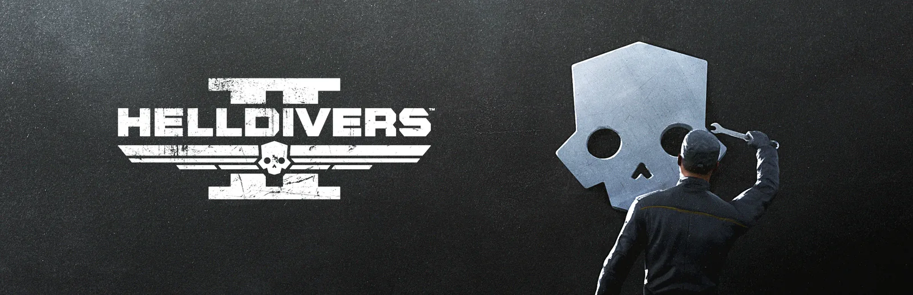

1.002.200
1.002.200

发布日期
2025-03-18
Release time
10:00 UTC
更新 Size
1.7 GB
Versions
1.002.200 was a major 更新 released for 绝地潜兵 2.
概述
- Balancing
- 崩溃修复
Balancing
主武器
SMG-32 Reprimand
- 散布从50降低至40
SG-8S 强击者
- 散布从20降低至6
- 伤害从250提升至280
AR-23C 震荡解放者
- 射速从320提升至400
R-63 勤奋者
- 弹匣容量从20提升至25
MP-98 骑士
- 伤害从65提升至70
STA-11 SMG
- 伤害从65提升至70
SMG-37 防卫者
- 伤害从75提升至80
SMG-72 重锤者
- 伤害从65提升至70
- Now requires less shots to apply stun on applicable targets, stun value 已增加 from 1.0 to 1.25 per bullet
AR-23 解放者
- 伤害从70提升至80
STA-52 突击步枪
- 伤害从70提升至80
BR-14 审判者
- 伤害从90提升至95
AR-61 软化者
- 伤害从95提升至105
R-36 喷发者
- 投射物 护甲穿透 已增加 from 中型 (3) to 重型 (4)
- 投射物 lifetime从0.7提升至1
Stratagmes
“飞鹰”110mm火箭巢
- 使用次数从2提升至3
EXO-45 爱国者 外骨骼机甲
- 使用次数从2提升至3
EXO-49 Emancipator 外骨骼机甲
- 使用次数从2提升至3
TX-41 Sterilizer
- 人体工学从5提升至20
M-105 盟友
- 伤害从70提升至80
MG-206 重机枪
- 已改进 护甲穿透 across a wider 射程 of angles before transitioning to glancing shots
Enemy changes
- A recent 软件 autopsy has revealed an 更新 to the 机器人' situational awareness protocol. They are now less distracted by each other, increasing their reaction 速度 in large groups.
- We’ve 已增加 the number of AI calculations the game can perform. This primarily impacts scenarios with a high number of spawned 敌人, improving their 回应 times in those situations. However, this comes with a slight 权衡 in game performance.
- According to recent intel, the 敌人 of Freedom are attempting to 反制 the 绝地潜兵' 防空 capabilities. Newly-produced 机器人 dropships show clear signs of hull 增援, allowing the main body to absorb significantly more 伤害.
- 光能者 Warp Ships have been observed deploying their 护盾 mid-flight.
- 机器人 Dropships: Main body 生命值 已增加 from 2500 to 3500
- 光能者 Dropships: Utilizes the same shield as the ones that have landed
Barrager Tank Turret
- 已解决 an issue introduced recently where the 护甲 value was incorrectly set to 0. Now has the 正确 护甲 value of 5
- Additionally, the turret now features weak spots at the front and back, each with 750 HP and an 护甲 value of 3
玩法
Settings
- Added new 分离 settings for inverting the gyro input instead of using the Invert Look settings
- The 战略配备 武装配置 menu has undergone an updated categorization of the different 战略配备 groupings
修复
ReResolved Top Priority issues
- Fixed an issue with the 撤离 beacon 有时 being unreachable when landing on top of 敌人
- 基本信息 优化 improvements in the colonies environments
Crash Fixes, Hangs and Soft-locks
- Fixed a crash when playing against 终结族 in poor 网络 scenarios
- Fixed a rare crash that happened during game shut down on PC
- Fixed a crash that could occur when there was a high amount of particles on the screen at once
- Fixed an issue where 玩家 could be blocked from completing 目标 requiring called-down 装备 due to the 必需 战略配备 being unavailable
武器 and 战略配备
- Fixed the G-123 铝热弹 手榴弹 有时 not arming
- Fixed a rare crash when using the LAS-17 Double-Edge Sickle
- Fixed a bug where switching 武器 while reloading the CB-9 Exploding Crossbow would 有时 discard an entire 弹匣 without 实际上 reloading
Social & Multiplayer Fixes
- Fixed an issue causing 玩家 in low-activity regions to see fewer lobbies on the 行星 hologram than expected
- Fixed an issue in low-activity regions where lobbies were not seeing 玩家 join as 频繁 or quickly as before
- Fixed an issue on low-activity planets where Quickplay would always join your friends game, even if they were not playing on the same 难度
- Fixed a disconnection issue that could happen when playing Gloom missions with poor 连接 to the host
- Fixed some interactions not working properly after canceling the Raise Weapon emote
- Fixed an issue where adding, removing, blocking, or unblocking friends caused player cards in the friend list to 显示 with white text and missing information until you close and open the panel again
- Fixed an issue that made it 不可能 to mute or kick 玩家 who were in the 武装配置 when joining a squad
- Fixed an issue that caused some new Steam 玩家' latest profile names to not 显示 correctly in-game
Miscellaneous Fixes
- Fixed some memory leaks to 改进 performance
- Fixed old text chat messages from re-appearing
- Fixed an issue with the Democracy Space 车站 progress bars being unintentionally curved in 外观
- Fixed a bug that prevented progression through the menus when the initial 语言 selection was set to English (US)
- Fixed the raise weapon emote to properly 火焰 projectiles in the 方向 of the weapon
- Fixed 绝地潜兵 sliding around on the ground after exiting the ragdoll state (despite it being the year of the snake and despite us trying to fix this previously)
已知问题
Top Priority
- Black box 任务 终端 may be unusable if it spawns clipped into the ground
- 战略配备 balls bounce unpredictably off cliffs and some spots
- Balancing and functionality adjustments for DSS
- Pathfinding issues in Evacuate Colonists 光能者 missions
- Dolby Atmos does not work on PS5
中型 Priority
- 玩家 can get stuck on 鹈鹕-1’s ramp during 撤离
- Currently equipped capes don't 显示 properly and show a blank grey cape in 军械库 tab
- 玩家 who use the “This is Democracy” emote on their ship might unintentionally send their fellow 绝地潜兵 on unauthorized unscheduled spacewalks
- AX/TX-13 “Guard Dog” Dog Breath does not show when it is out of 弹药
- Higher zoom functions do not zoom the camera in through the scope on the LAS-5 Scythe
- 武器 with a 蓄力 机械师 can exhibit unintended 行为 when firing faster than the RPM (Rounds 每分钟) limit